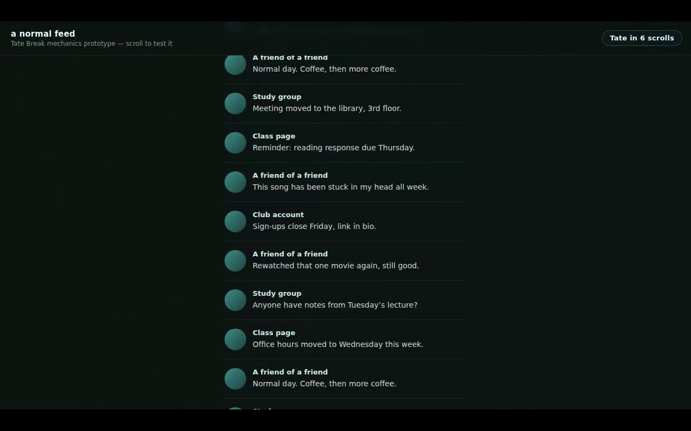

A standalone, dependency-free web prototype of Tate Break's actual interruption mechanic — the same trigger-and-companion loop already shipped as a working Chrome extension, rebuilt here with input, logic, and output pulled apart into their own files, per this assignment's architecture requirement.
Core loop: scroll a simulated feed. Tate appears once shortly after the page loads, and again every fixed 10 scrolls. He walks on, lies down, covers the feed, leads a 15-second breathing pause with cycling cues, then gets up and leaves — the feed resumes exactly where it was.
One clearly implemented core function: the fixed scroll-count trigger → on-screen companion break → automatic resume cycle.
Defined input: mouse-wheel / trackpad scroll events on the page. Defined processing: a three-state engine counting scrolls toward a disclosed fixed target. Defined output: Tate's walk-on/ breathing/walk-off sequence plus an always-visible tally.
Visible choice point: a small pill fixed to the top-right corner ("Tate in N scrolls") shows the exact, real count at all times — never hidden, never randomized — so the person always knows how close the next interruption is before it happens.
src/input/scrollInput.js INPUT LAYER src/logic/breakEngine.js LOGIC LAYER src/output/tateRenderer.js OUTPUT LAYER main.js wiring only — no behavior of its own
Listens for raw wheel events and turns a noisy burst of
native events (one real scroll gesture can fire dozens in a few
milliseconds) into a single clean "a scroll happened" signal, using a
350ms gap to tell one gesture from the next. Knows nothing about Tate,
counting, or timers.
The actual state machine: a scroll counter, a fixed target (10), an
open-delay timer, and a break-duration timer. Two states —
IDLE (counting) and BREAK_ACTIVE (a break is
running; new scroll signals are ignored, not queued, until it ends). No
DOM references anywhere in this file — the same fixed-count design
already tested and shipped in the real extension's content.js,
lifted out of the browser entirely.
Everything about how it looks: the walk-on/lie-down/breathing/walk-off sequence, the cover image, and the tally pill. Receives events from the logic layer and never decides when those events happen.
Creates one of each layer and connects them with plain callbacks. Also builds the cosmetic simulated feed, which the mechanic doesn't actually depend on — swap in a real feed and nothing else in the project needs to change.
createBreakEngine(). Never
written to a file, a cookie, localStorage, or a server.IDLE — matching the shipped extension's
own documented behavior.src/ — no
fetch, no XHR, no analytics beacon.Cross-referenced against Tate Break's own SYSTEM_CHARTER.md
(written for the prior Interface Ritual Sketch submission, since Tate
Break branched off mid-module before a formal Tool Intent Statement
existed for it):
| Charter says | This prototype does |
|---|---|
| "Fires once shortly after the page opens, and then again every 10 scrolls… a fixed, disclosed number, not a hidden one." | openDelayMs: 1500 and scrollTarget: 10
in main.js, both plain constants, both shown via the tally pill. |
| "No… scroll history saved beyond the live count for the current break cycle (which resets to zero the moment he appears)." | endBreak() sets scrollCount = 0 the
moment a break ends; nothing is written anywhere before that reset. |
| "Never locks the feed permanently… never nags outside its one 15-second window." | BREAK_ACTIVE always returns to IDLE on
a fixed timer — no code path leaves it active indefinitely. |
| "The trigger count is fixed at 10… it isn't hidden or randomized." | The tally pill renders the real scrollCount /
scrollTarget values on every scroll. |
No gaps found between the stated charter and the built mechanic for the one function this prototype implements. The charter's Notes/ Reminders/Goals hub is a separate feature of the full Chrome extension and is intentionally out of scope here.
Full recording: tate-break-demo.mp4, 45 seconds (under
the 2-minute limit), attached alongside this PDF — a PDF page can't
play video, so the frames below are a storyboard of it, in order.

All four required pieces are done and live:
https://claude.ai/artifact/JBJwbkipTkLsmoyFoY6Ndohttps://github.com/triddell29-lgtm/tate-break-mechanics
— 8 clean, sequential commits (input layer → logic layer →
output layer → wiring → assets → build scripts → README →
submission bundle), pushed and verified.tate-break-demo.mp4, 45
seconds, attached alongside this PDF (storyboard on p. 6).To turn this in: upload this PDF and tate-break-demo.mp4
as two attachments to the assignment (or zip them together first if
your LMS only accepts a single upload). If there's a text field for
the GitHub link, paste
https://github.com/triddell29-lgtm/tate-break-mechanics
there as well.